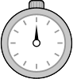

Place your cursor and click after each word that you identify, as if to separate word from the next
for example:
When you have completed the page, press the “Finish” button.
If you made any mistakes, WordChains will ask you to find/identifysome missed words in the next puzzle screen.
Once you find the word, click on it. You will then be transferredto the next screen.
The WordChains test consists of a single practice-screen, followed by three test-screens.
You will have one-minute to identify words on each test screen.15 seconds before theend of the test, you will briefly see a flashing picture of a stopwatch image.
Once the minute has expired, you will automatically proceed to the next test screen.
Take Assessment